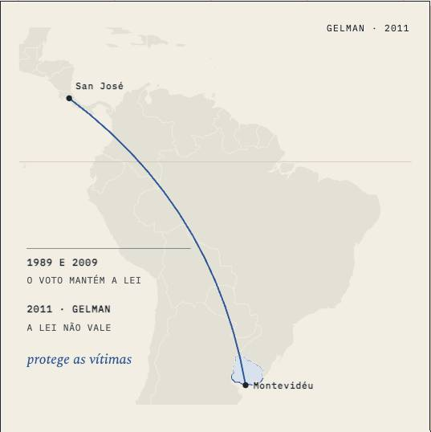

Direito Latino-americano · aula-06
Reeleição e direitos políticos: Bolívia e OC-28
3,268 words, one sitting · 8 chapters · 1 figure, 0 saying what they do · 2 quoted sources · a quiz
built on2.1
on05/10
byCEO
generation2 Sequoia
commits27
how it's built
- 1A regra que o eleitor recusou mudar487 w
- 2O que a SCP 0084/2017 afastou252 w
- 3A leitura boliviana do direito de ser eleito319 w
- 4A resposta consultiva de 2021756 w
- 5O alcance dos votos e dos cargos398 w
- 6Três usos da Convenção306 w
- 7Responder ao eixo com os casos181 w
- 8Teste482 w
its figures

what it quotes
- 1×Constituição da Bolívia
- 1×Corte IDH · OC-28/21
prepared for it · 14 chapters
- primaryscp-0084-2017 · PDF 60–64
- primaryscp-0084-2017 · PDF 64–74
- primaryscp-0084-2017 · PDF 74–79
- primaryscp-0084-2017 · PDF 79
- primaryoc28-21 · PDF 21–28
- primaryoc28-21 · PDF 28–32
- primaryoc28-21 · PDF 32–37
- primaryoc28-21 · PDF 37–41
the course, as I read it
Prepared well, rebuilt halfway, never designed as one object.
its checks
negated inference 1.8 / 0.5
gap talk 0.0 / 0.1
contrast tail 0.3 / 0.5
staged reveal 7.3 / 8.0
its life
- 15/10The turn: a folded corner and ⌘⇧K turn every page to its backstage and back
- 15/10Latam: four hero strips stop coding categories by colour
- 15/10First screen: one-line titles, marker yellow, Controle card by form, no past dates
- 07/10Paper scrolls with the text in portrait, pinned elsewhere
- 06/10WIDE-4: reading column halfway (1,083 px)
- 06/10CASA-2: Latam adopts the house layer (one source block, marks pilot on Aula 05)
- 06/10FRONT-C1 + WIDE-3: Controle planta on phones; standalone desktop text ~2x wide
- 06/10CASA-3 · Latam Aula 06 on the house marks
next (my note of 14/10: keep · deslop)